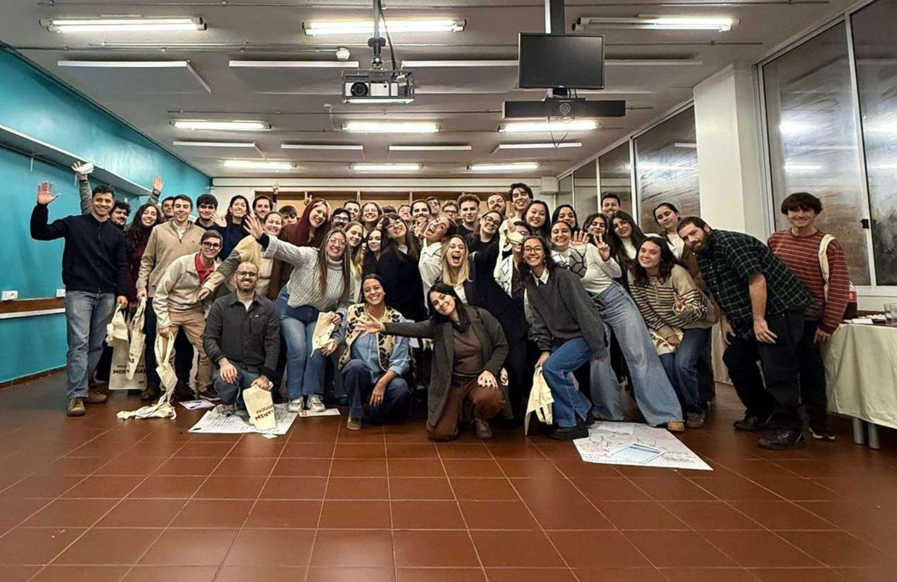
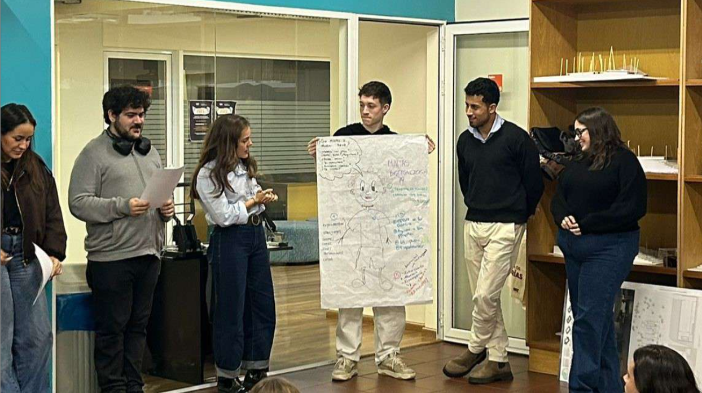
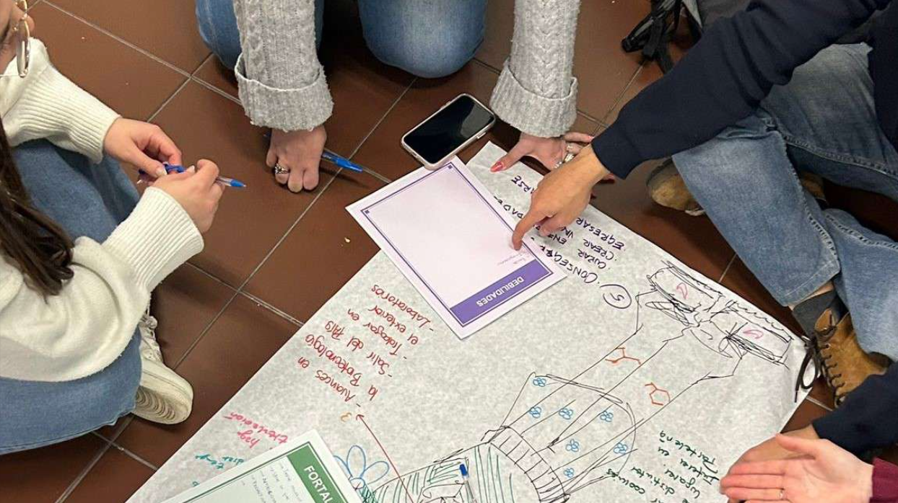

ACTIVIDADES
Detalle de los últimos encuentros y talleres realizados.





El Programa de Mentorías de ORT reunió el 27 de mayo a mentores de todas las facultades en una actividad impulsada por las Consejerías Estudiantiles, realizada en el Campus Pocitos de la universidad. Durante el encuentro, trabajaron en dinámicas colaborativas para comprender mejor las experiencias, necesidades, miedos y motivaciones de los estudiantes de primer semestre. A partir de la creación de avatares, análisis FODA y propuestas de comunicación, compartieron estrategias para generar vínculos más cercanos y acompañamientos más pertinentes.